The Undergrove
Plants of the deep caves. No seasons reach this far down, so they keep the moon's time instead: they flower, fruit and seed by its phase. Every rooted one grows in its own ground, never bare stone: cave silt by the underground rivers, guano under the bats, root mat where the trees' roots come through the roof.
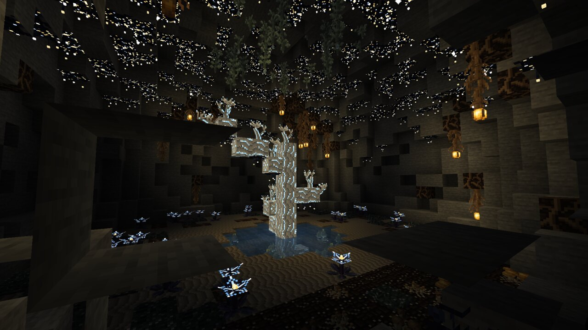
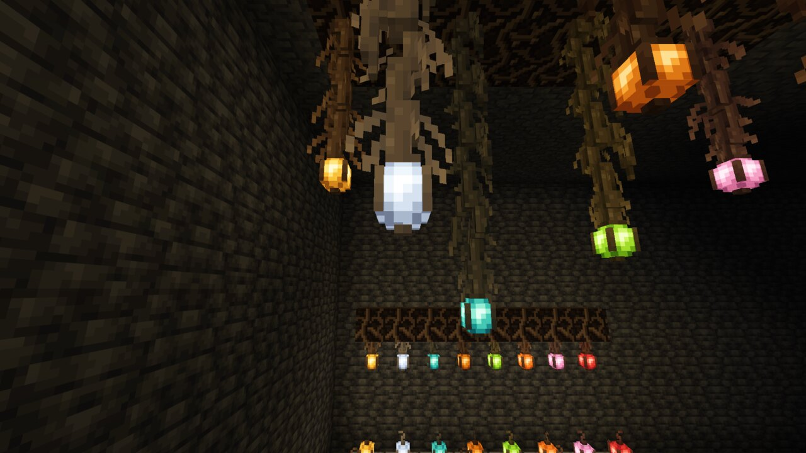
The plants
| Plant | Where | What it does |
|---|---|---|
| Lantern Bulb Lanternroot | cave roofs 6 to 40 blocks under woods, plains and savanna | Roots of the trees above, hanging through the roof from root mat. The bulb glows the tree's colour: oak gold, birch silver-white, spruce blue-green, dark oak amber, jungle lime, acacia orange, cherry pink, mangrove red. Use a ripe bulb to pick it. |
| Breathbell Breathbell | flooded caves and underground rivers | Pale bells hanging mouth-down, each holding air. Swim your head into a full one and you get your breath back. It fills again in half a minute to a minute. |
| Darkbloom Darkbloom | on silt and guano in dark caves | Opens only in total darkness: a torch near it, or a light in someone's hand within five blocks, and it shuts. Fill a glass bottle from an open flower with nectar. |
| Goblin's Purse Goblin's purse | on guano under bat roosts | Caps like stacked coins. They turn gold only in the dark of the moon (the new moon and a night either side). Use a gold cluster to pick one to three caps. |
| Dripwort Dripwort | damp cave roofs, dripstone and lush caves | A pale vine whose tip beads with stone-water. A glass bottle takes the bead; a cauldron underneath fills drop by drop. |
| Hushmoss Hushmoss | deep cave floors, thickest in the Deep Dark | A soft grey moss that damps vibrations like wool: walk on it and the sculk and the Warden don't hear you. |
| Embermoss Embermoss | rock round lava, deep down | Smouldering moss that counts as a fire against the winter's cold. Dry it in a smoker or over a campfire for fuel, or for ember tea. |
| Starmoss Starmoss | the roofs of tall caverns | Points of light that come out only while it's night above, twinkling most at the full moon. |
By the moon
Eight nights to a month, full moon to full moon. A calendar or the Field Guide's date shows where you are.
| Moon | Below |
|---|---|
| Full moon | Lanternroot bulbs ripen fastest; dripwort beads fastest; starmoss twinkles most; moonwood glows bright (light 12). |
| Waning | Moonwood dims, night by night. |
| New moon (and a night either side) | Goblin's purse turns gold; darkbloom nectar comes fastest; the Goblin Market opens; moonwood goes dark. |
| Waxing | Moonwood brightens again. |
Close up
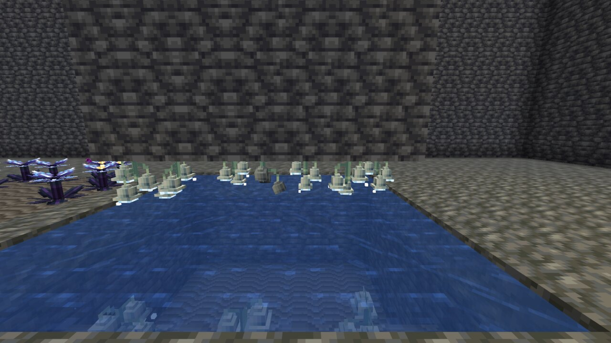
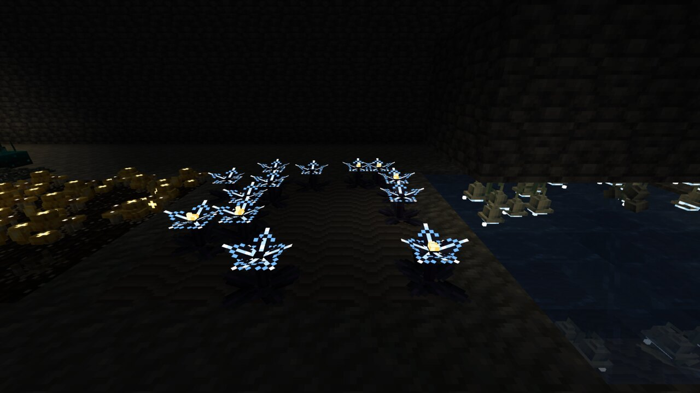
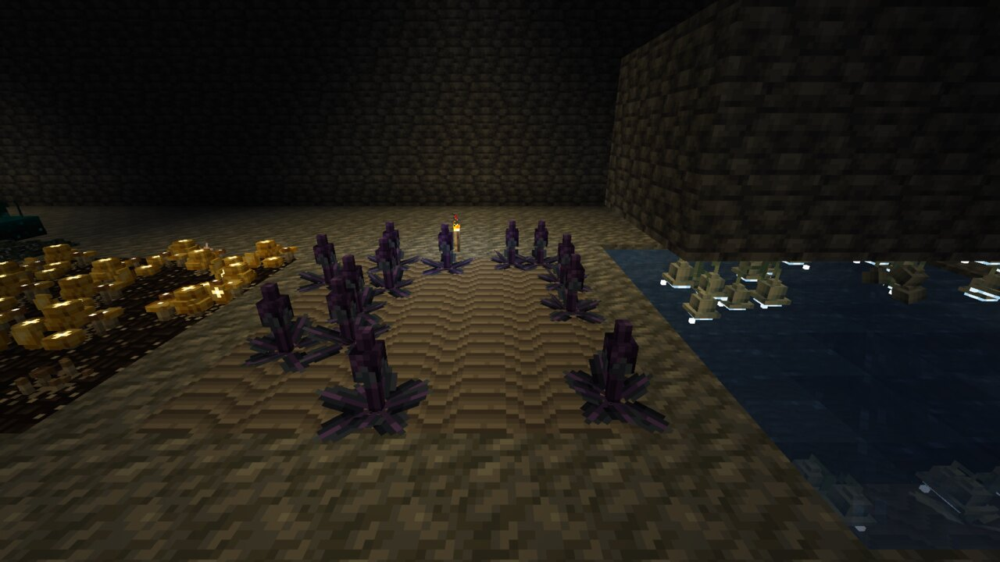
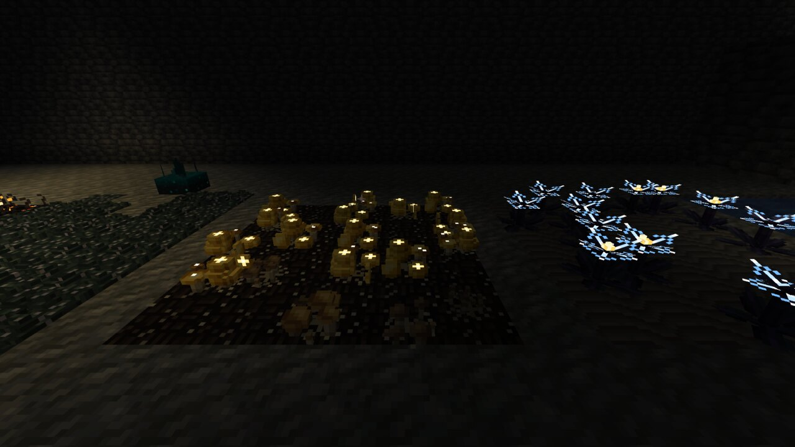
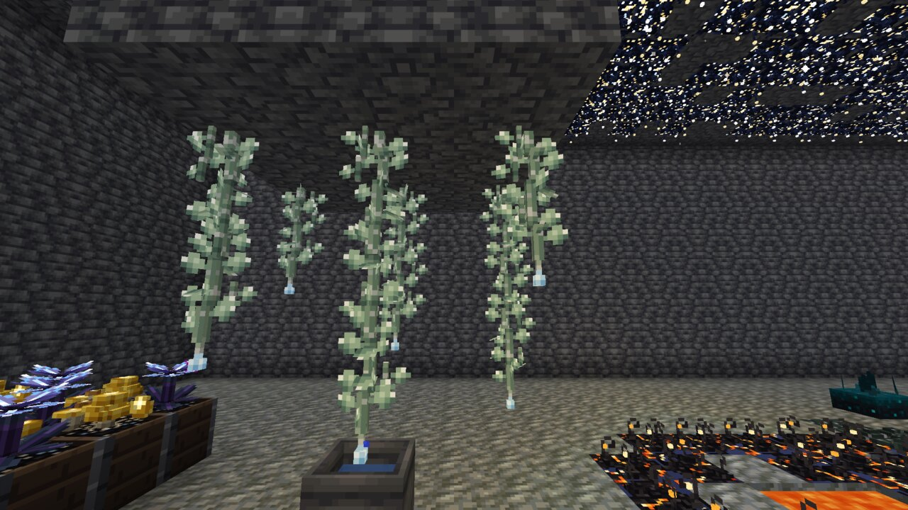
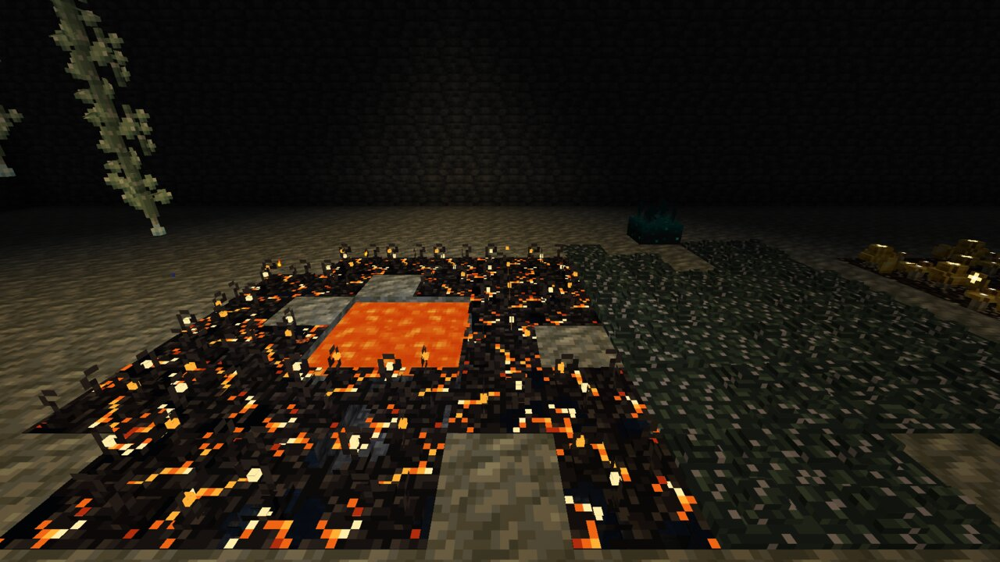
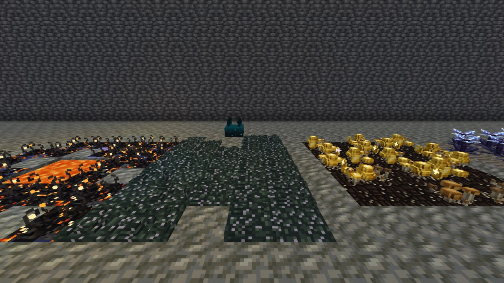
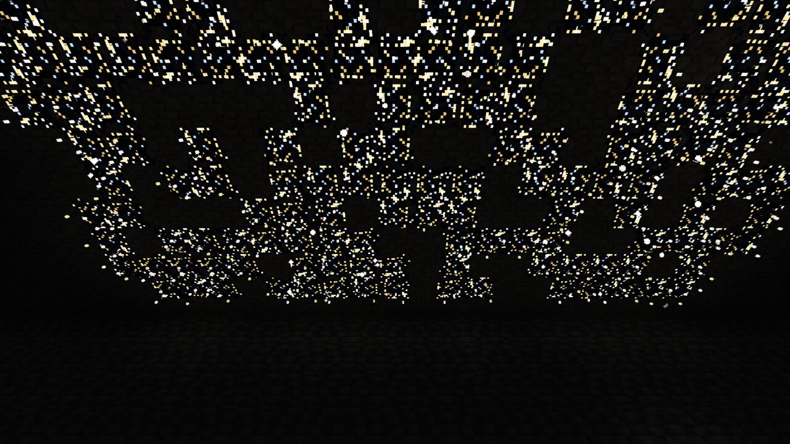
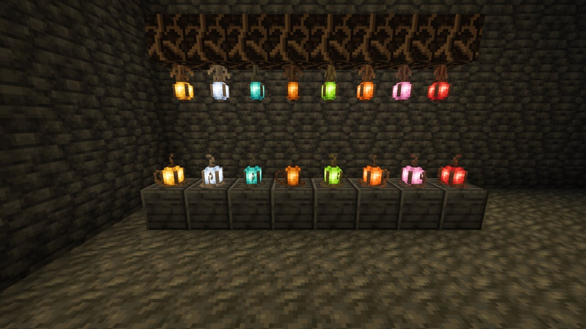
What they give
| Use | |
|---|---|
| Lantern Bulb | Set it down as a lamp (light 12), standing or hung. Hold it to the underside of root mat or earth to plant a new lanternroot of its colour; crouch to hang it there as a lamp instead. |
| Darkbloom Nectar | Drink: Night Vision for 4 minutes. |
| Stone-Water | Drink: clears Poison, Nausea, Hunger and Weakness. |
| Goblin's Purse | Goblins take it over gold: one cap for three nuggets. Plant a cap on cave ground for a new purse. |
| Dried Embermoss | Fuel: 3200 ticks, twice as long as coal (furnaces and the brick oven). Steep it in a teapot for ember tea. |
| Ember Tea | Drink: Warmth for five minutes, against the winter's cold. |
| Bottled Air | Use a glass bottle on a full breathbell. Drink it under water for all your breath back. |
| Moon Dial | Starmoss on three sides of a moonwood branch, a gold ingot below. Its window shows tonight's moon; use it to hear what the cave plants are doing. |
| Toasted Goblin's Purse | Goblin's purse caps toasted in a smoker, furnace or over a campfire: a filling snack. |
| Guano | Brings any cave plant on a step (it can't make the moon come round). Composts richly. Dig a guano heap for 2 to 4. |
More uses
- Brewing: darkbloom nectar on an awkward potion brews Night Vision; a breathbell brews Water Breathing.
- Stone-water poured on a crop grows it a stage, and fills a teapot as well as a bottle of water.
- Hushmoss boots: crouch and use hushmoss with boots on to line them. Your steps, landings and swimming no longer reach the sculk; mining and fighting still do.
- Dried embermoss lights campfires, candles and fires like a flint and steel, makes four torches over a stick, and stands in for coal in a campfire.
- Guano works like bone meal on any plant, and two with a piece of charcoal make gunpowder.
- Lantern bulbs craft into glow ink sacs. Darkbloom makes two purple dye, starmoss light blue, dripwort white.
- Cave silt fires into terracotta; root mat burns, and with dirt makes rooted dirt.
- Knockers take a gold goblin's purse cap like a pasty and lead you to the ore.
Growing them at home
- Dark beds (cave silt, a guano heap and cave silt over three planks: two beds) grow darkbloom and goblin's purse in a cellar, if it's dark and there's water within four blocks. A goblin's purse still goes gold only in the dark of the moon.
- Root mat (four hanging roots) makes a roof for lanternroots: plant a bulb against its underside. Dripwort hangs from any roof.
- Bats visiting darkbloom and goblin's purse carry their seed off to grow nearby. Snails graze them back.
- Hushmoss blocks make three carpets from two. The carpet creeps slowly across dark floors.
The Undergrove
Rare and deep (between y -34 and -8): a great cavern where all of them grow together round a still pool, and in the pool a moonwood tree, pale and leafless, its veins glowing with the moon. Its wood keeps the moon's time wherever you build with it.
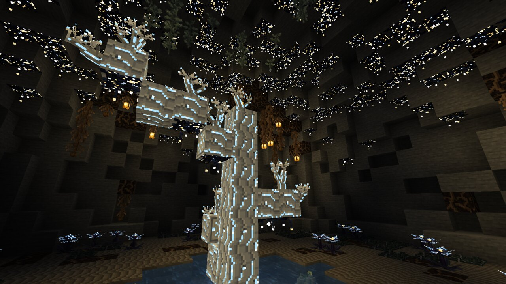
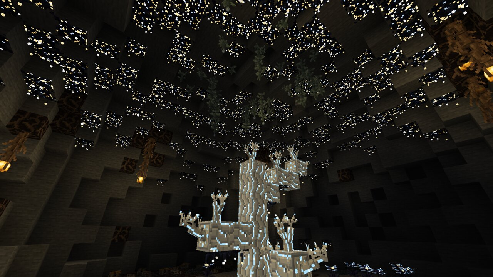